習慣化アプリ「みんチャレ」
健康管理機能
PJ体制：PO 1名 / Designer 1名（自身） / Engineer 4名 / 医療職 2名 / CS 2名 / 営業 3名 ※イラストは外部イラストレーターに都度発注
BtoBtoCのモデルにおいて、「保険者（健康保険組合等）」の業務効率化・施策効果の可視化と、「被保険者（従業員等）」の健康行動の習慣化・エンゲージメント向上を同時に実現し、保健事業全体の投資対効果を最大化させる。自治体・企業向け（BtoBtoC / BtoG）健康増進事業において、ユーザーが日々の健康数値（血圧・血糖値・歩数など）をストレスなく記録・継続できるPHR機能の画面UI設計・体験設計および前半PM業務を担当。
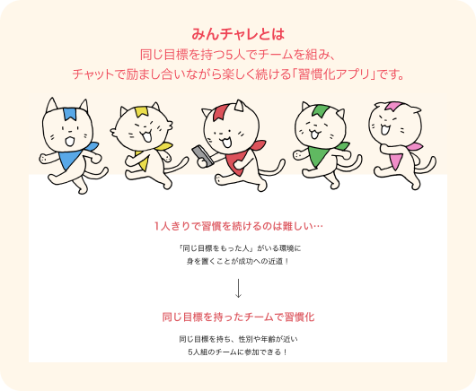
プロセス
エーテンラボは専任のPMがいない。デザインフェーズと実装フェーズでデザイナーとエンジニアがPMを兼任している。上司から次の施策が「保健事業の効果を高める」になり、担当するよう指示があった。a10の施策は具体ではなく抽象で降りてくる。まず施策の起案者である社長にヒアリングをし、保健事業部の収益化改善という目標があることがわかった。また保健事業は禁煙に力を入れていたが、今後重症化予防に注力していくと方針転換が示された。
そこから保険プログラムの作成をしている医療職と企画職、CSに話をしにいき、それぞれの行なっていることや、課題に感じていることなどを聞き、全体をFigjamにまとめた。次にカスタマージャーニーマップを作成し、課題の抽出を行なった。しかし問題点の量や要求が膨大だったため、収益改善のインパクトの高いもの・オペレーション負荷の高いものなどを高優先度として位置付け、フェーズ1としてスコープを切った。チームに入らなくてもPHRが貯められる機能、ユーザーが継続にハードルを感じている部分の体験改善、現行機能との整合から着手することにした。定例MTGを設定し、POはじめ関係者と認識のすり合わせをしながらファシリテートを行った。
背景
健康保険組合や自治体などのBtoBtoC/BtoG事業において、参加者の健康数値（PHR）の改善成果を定量的に証明・追跡することが求められていた。しかし、従来の健康プログラム事業は外部サービスへの依存度が高く、PHR機能も特定の疾患リスクを抱えるユーザー向けのプログラム（保健指導等）に対応しきれていない。これまでtoC向け事業展開に注力していたため、健康プログラム作成とアプリの機能活用がうまく連携できていない。
課題
ユーザー側（被保険者等）
ビジネス・自治体側の課題
※管理画面は社外秘のため、こちらの内容については非公開としています。
制約
みんチャレはあくまでも習慣化アプリの位置付けであり、新機能はヘルスケア分野に興味のないユーザーにとってノイズとなってはならない。また医療行為を行ってはならない。
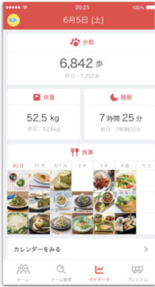
旧画面(マイデータ)
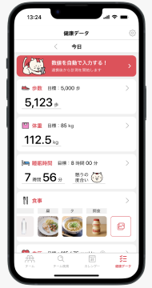
リニューアル画面
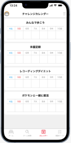
分離&改善したカレンダー
タップで詳細に遷移するが、複数チーム参加時でも1週間単位での継続状況を一目でわかるようにしたところ継続状況の数値も上昇した
問題点と解決策_01
チームに入り、チャレンジ投稿するまで数値の入力が出来ず、入力までのクリック数が多い。
数値の編集ができない。
工夫した点・苦労した点
- 趣味などの健康とは関係ない習慣のユーザーにとってノイズにならないようチャレンジのカレンダーを分離した。
- バリュープロポジションキャンバスを作成し、習慣化アプリとしてやらないことを決めた。医療器具認証された医療系アプリでしかできない部分では対抗しても意味がないため、独自性が出せる部分コア機能であるピアサポートが生きる体験設計を目指した。
- 医療系アプリの硬い印象ではなく、遊び心がありやる気が出る感じのビジュアルを打ち出すことにした。入力のしやすさとビジュアルのメリハリのバランス。タップ領域はエンジニアと密に連携し、微調整をした。
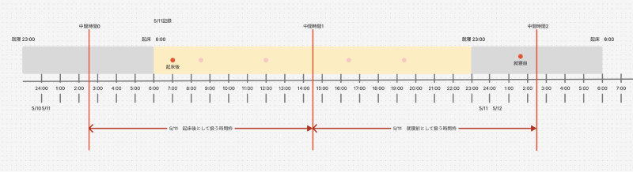
血圧記録時間区切ロジック
通常のヘルスケア系アプリは0時区切のものが一般的だが、習慣化アプリとして生活習慣に根ざした時間区切と実装難易度のバランスが難しく、エンジニアと協議しながらすすめた。血圧は1日の中でも何度か計測するが、起床後就寝前のタイミングが重要であり、夜勤など多様な生活時間の方に合わせてどの数字を採用するかをロジックで出すことにした。
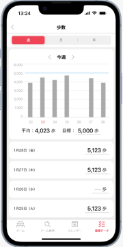
歩数詳細
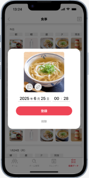
食事詳細&編集
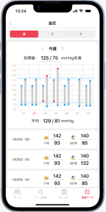
血圧詳細
血圧は月年の場合折れ線グラフに変化。歩数や体重などは月と年では平均値も表示するようにした。項目・期間ごとに最適なグラフ表現を行なった。
問題点と解決策＿02
- 数値の変化をわかりやすいグラフにすることでモチベーションアップ。週月年と切り替えることで長期感の変化がわかるようにした。
- 被保険者からのニーズが高かった生活習慣病である高血圧、高血糖に対応した項目を追加した。
工夫した点・苦労した点
- 歩数を競うサービスなども別に展開しているため、API連携を切断したり、歩数を編集した場合わかるようにした。
- 血圧の数値は起床後・就寝前という数値が重要だがグラフ化する際に一般的な表現ではなかったため、ステークホルダー数名から見たことがないのでよくわからないと反発が大きかった。しかし、海外の血圧測定アプリなどでは使われている表現であると説得することで、採用することができた。
重症化予防プログラム専用画面
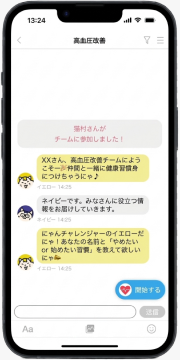
チーム参加直後の画面。「開始する」押下で目標設定画面に遷移。
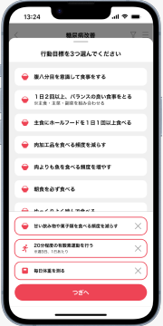
目標設定画面
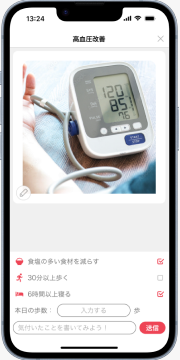
チャレンジ送信画面
問題点と解決策＿03
工夫した点・苦労した点
- 健康プログラムは社外の専門家に監修を受けているが、表現を厳密にしようとすると項目数が多すぎたり長文になってしまいユーザー体験を損なってしまう。
- 目標設定画面は項目数が多くスクロールが大変だったので、選択したものを下にも表示し、選び直したい場合や外したい場合にすぐタップできるようにした。
- 週に1回以上〇〇するなどの表現がユーザー目線では直感的ではないため、ユーザーがチェックをする際は1日単位での表現に変更するなど、すり合わせに難航した。
- 血圧や血糖値などは個人情報のためどこまで公開とするかを医療職と相談し決めた。歩数のみを公開し具体的な数値は他ユーザーには見せず、行動結果のみをチームメンバーにも開示するようにした。
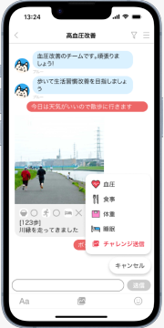
チーム内記録ボタン
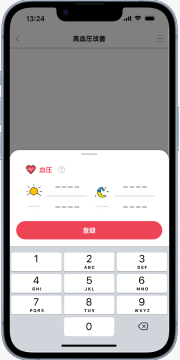
チーム内入力UI
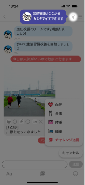
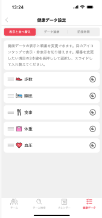
入力ハードルを下げるために、必要の無い項目は非表示にカスタマイズできるようにした
ユーザー属性による棲み分け
工夫した点・苦労した点
- みんチャレは1つで2C2B2Gのユーザーが混在しており、課金方法・額も属性ごとに異なるため棲み分けに苦労した。
- チームに参加しないとコア機能であるピアサポートは受けられない。健康管理機能はチームに参加しなくても使用できるよう整合を取る必要があった。社長と医療職メンバーと3人で2日に1回MTGを行い大量の画面を作成した。
アクセシビリティについて
- みんチャレのカラースタイルは決められたルールがあったが、スマートフォンアプリ黎明期に作られたアプリだったためWCAGの基準に満たないグレーが使用されていた。健康管理機能ユーザーは高齢、壮年が対象になるため基準に満たないグレーを使用しないように、AAを達成している新しいグレーカラーの追加を行った。
- 別プロジェクトになるがiOSのダイナミックフォント対応を行ったため、フォント崩れする画面が生まれていた。今回追加した画面はそれらの対応を念頭に、あらかじめバリアブルで高齢者文字サイズのモードを設定し、大目に余白を取るなど崩れにくい画面設計を目指した。
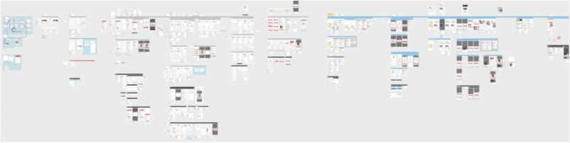
本プロジェクトFix画面全体。同じUIはコンポーネント化しプロパティ活用で極力省力化した。
ここには載せないが、没画面は3倍ほどある。
成果と振り返り
- toBユーザーのオンボーディングでの離脱が減少し、プログラム参加者が増加した。
- 外部ツールで行なっていた人力によるオペレーション工数削減につながった。
- 血圧手帳や他のアプリを併用していたユーザーから、感謝の声をいただいた。
- 血圧と血糖値は新規プログラムのため継続率はまだ測定できていない。
- リソースの不足により、まだ実装されていない機能がいくつかある。
- キャッチアップフェーズにおけるプロジェクトだったため、事業目標やステークホルダーの意図を正確に把握する初期ヒアリングに十分な時間を投資した。
- 専門職・開発チーム間において認識の齟齬が起きやすい難易度の高い案件であったため、初期の要件定義とフィードバックの回収・調整に時間をかけた。
副次的な効果
- カレンダーを分離したことにより、1週間単位での目標達成状況が可視化された。複数チーム参加のtoCユーザーに「カレンダーを全部写真で埋めたい」という欲求が生まれ、toCユーザーの継続率が向上した。
- 今回の機能を活用した自治体向けの入札に参加できるようになった。
- 未実装だが、AIによるにゃんチャレの性格調教のテストができた。
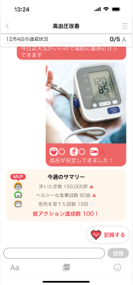
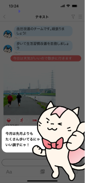
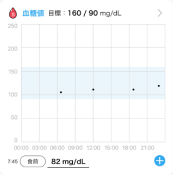
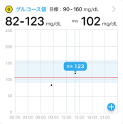
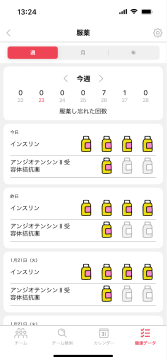
開発工数の制約や優先度からフェーズ2以降に開発することになった機能一部分